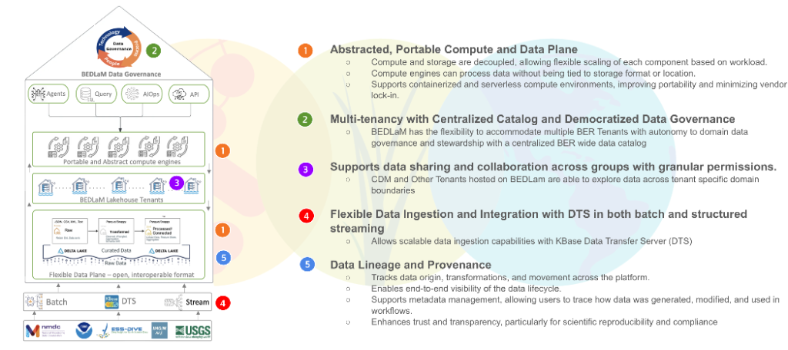

KBase Lakehouse Architecture¶
A Multi-Tenant, AI-Native Data Lakehouse Platform for BER-Wide Data Integration
The KBase Lakehouse provides a unified technical foundation for data integration, large-scale analytics, and multi-program collaboration across the DOE Biological and Environmental Research (BER) ecosystem. Its architecture is designed to support diverse scientific workflows—from genomics and multi-omics to environmental observations and machine-learning–assisted discovery—by combining scalable storage, portable compute, fine-grained governance, and rich metadata capabilities.

The following sections describe the core architectural principles and how they shape the platform’s functionality, extensibility, and scientific value.1. Abstracted, Portable Compute and Data Plane¶
At the heart of the architecture is a decoupled compute and storage model, ensuring that the platform remains flexible, scalable, and portable across infrastructures.
Decoupled Architecture¶
The data plane (storage) and compute plane (Spark, Ray, containerized runtimes) operate independently:
- Compute clusters can scale horizontally based on workload demand.
- Storage grows independently of compute, enabling cost-efficient expansion.
- Multiple compute backends (JupyterHub, Spark, task services, agentic workers) access the same underlying datasets.
This design removes resource bottlenecks and allows the platform to adapt to diverse scientific pipelines.
Storage-Agnostic Compute¶
Compute services do not depend on a specific storage system:
- Delta Lake on MinIO serves as the default transactional storage layer.
- The system can read/write to external object stores (S3, Swift), shared filesystems, or federated storage systems through standard connectors.
- Data is accessed via open formats (Parquet, Delta, JSON, CSV), ensuring interoperability with HPC, cloud, and containerized environments.
This abstraction minimizes vendor lock-in and maximizes computational portability.
Portable Compute Environments¶
The platform is intentionally designed for hybrid and portable operation:
- Containerized compute (Docker, Kubernetes, Podman)
- Spark clusters running on local Kubernetes, cloud clusters, or HPC environments
- Serverless or ephemeral compute environments triggered by events or tasks
- AI/ML workloads deployed through event-driven task services or agent frameworks
This portability supports future BER-wide platform deployments across labs and cloud-augmented environments.
2. Multi-Tenancy with Centralized Catalog and Democratized Data Governance¶
The KBase Data Lakehouse must support multiple BER programs, each with unique data types, governance needs, and scientific workflows. The architecture incorporates a multi-tenant model rooted in autonomy, security, and discoverability.
Flexible Multi-Tenancy¶
Each BER program—such as KBase, JGI, NMDC, EMSL, and ESS-DIVE—can operate as an independent tenant with:
- Dedicated namespaces and schemas
- Independent ingestion pipelines
- Program-specific metadata models
- Custom access control policies
This allows each program to maintain stewardship over its data while benefiting from a unified platform.
Tenant Autonomy and Ownership¶
Tenants control:
- Data organization and schema definitions
- Access policies for their storage layer
- Approved datasets for cross-tenant sharing
- Metadata enrichment and classification
Governance is decentralized at the tenant level, while platform-level services enforce standardized security and lineage policies.
Unified BER-Wide Data Catalog¶
Although tenants are isolated, the platform provides a single federated metadata catalog powered by Apache Atlas (or an equivalent metadata service):
- Scientists can search, browse, and discover datasets across all tenants.
- Policies determine what metadata—and what data—is visible to whom.
- Cross-program research teams can identify relevant datasets without compromising data security.
This delivers a shared knowledge layer across the entire BER community.
3. Supports Data Sharing and Collaboration¶
The Lakehouse is built to encourage collaboration and scientific reuse while respecting data ownership and policy boundaries.
Cross-Domain Data Exploration¶
Scientists, analysts, and automated workflows can explore datasets across tenant boundaries (subject to permissions). This enables:
- Integrative multi-omics workflows
- Cross-program comparisons (e.g., JGI assemblies + NMDC metadata)
- Joint modeling projects across labs
- Large-scale ecosystem and environmental analyses
Data need not be physically moved—access is managed through governance policies.
Fine-Grained Access Controls¶
The architecture supports highly granular access patterns:
- Table-level, column-level, row-level, and tag-based restrictions
- Roles for tenant stewards, analysts, contributors, and viewers
- Conditional access (e.g., allow viewing of metadata but not raw sequences)
This ensures that sensitive or proprietary data is protected while maximizing scientific collaboration.
4. Flexible Data Ingestion and Integration¶
Scientific data arrives in many forms and at different velocities. The platform provides flexible ingestion mechanisms to accommodate all.
Hybrid Ingestion Modes¶
The Lakehouse supports:
- Batch ingestion for large files, facility outputs, historical datasets
- Structured streaming for incremental updates, instrument feeds, metadata events
- Event-driven ingestion triggered by the KBase Data Transfer Server (DTS), task services, or agents
- Schema-aware ingestion for harmonized scientific domains
This flexibility enables scalable ingest pipelines for genomics, multi-omics, environmental observations, and knowledge graphs.
Scalable Data Transfer via KBase DTS¶
The Data Transfer Server (DTS) provides a secure and scalable mechanism for moving large datasets into the platform:
- Parallel multi-stream upload
- Transfer resume & integrity checks
- Integration with user-level authentication
- Automated pipeline triggering upon arrival
DTS ensures that data ingestion remains efficient even for terabyte-scale workloads.
Integration with External Systems¶
The Lakehouse can connect to:
- DOE facility data streams
- KBase Apps and Narratives
- JGI and NMDC APIs
- HPC data outputs
- Cloud buckets
- AI-driven task services
This establishes the Data Lakehouse as a central integration point across BER.
5. Data Lineage and Provenance¶
Scientific workflows demand transparency, reproducibility, and auditability. The architecture embeds lineage and provenance tracking as first-class capabilities.
End-to-End Lifecycle Tracking¶
The platform automatically tracks:
- Data origin (source, project, method)
- Ingestion pipelines and parameter settings
- Transformations (Silver/Gold layer refinements)
- Downstream analyses (Spark jobs, AI tasks, workflows)
- User actions and permissions
This enables users to reconstruct full analytical histories.
Visibility & Metadata Management¶
All datasets, tables, workflows, and transformations are annotated with:
- Technical metadata (schemas, file structures, timestamps)
- Semantic metadata (ontologies, biological entities)
- Governance metadata (ownership, policies)
- Lineage graphs (input → transformation → output)
These metadata enrichments allow users and automated agents to reason about data relationships.
Trust, Reproducibility, and Scientific Integrity¶
The Lakehouse architecture ensures:
- Reproducible computational paths
- Transparent data transformations
- Stable references to dataset versions via Delta Lake’s time travel
- Compliance with FAIR data principles
This strengthens scientific rigor and reduces uncertainty in downstream analyses and modeling efforts.
Summary¶
The KBase Data Lakehouse architecture is built to support the future of BER-wide, cross-program data integration. Its core principles—compute portability, tenant autonomy, collaborative access, flexible ingestion, and robust lineage—combine to deliver a scalable and trustworthy platform for data-intensive scientific discovery.
It is the foundation upon which next-generation AI-assisted data ecosystems, automated reasoners, and federated scientific knowledge graphs will be built.